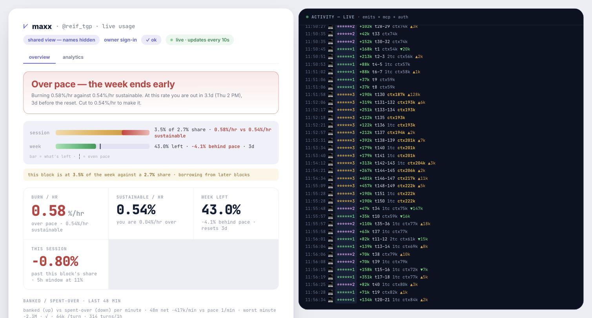
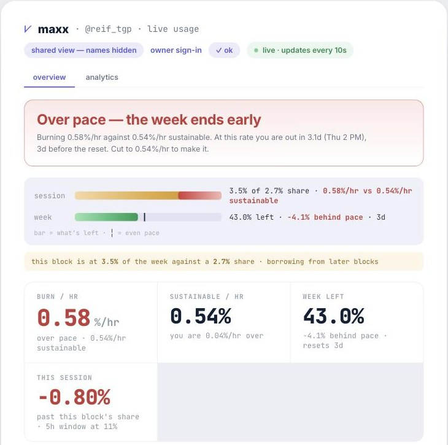

maxx
One tally for what a Claude Code session can safely spend right now. Every machine, every cloud agent, one number.
Jump to the MCP endpoint → · Install the statusline → · GitHub →
What maxx is
maxx is a counter. It reads token usage from every Claude Code session on every machine you run, prices each token by model, and turns that into one question with one answer: how much can this session spend right now without ending the week early?
It answers as a rate. Your burn in percent-of-week per hour, against the rate that spends the week exactly by its reset. When you are over, it tells you the hour you run out.
maxx counts. Anthropic limits. Nothing maxx computes can deny you work. The only things that stop a call are Anthropic's own 5-hour and 7-day windows, and they enforce themselves by rejecting it. A counter that can deny is a limit nobody agreed to.
Three surfaces, same numbers:
- An MCP endpoint any agent can call, headless, before it burns.
- A statusline in the Claude Code terminal for humans.
- A dashboard at
meetmaxx.co/u/<handle>/dash, live, shareable.
The problem
Claude enforces two walls: a 5-hour session cap and a 7-day weekly cap. /usage shows you the 5-hour one clearly. The weekly one is the one that actually ends your week.
A 5-hour window refills every 5 hours. So "session 100%" reads fine six windows in a row. Spend every window to its wall and the week is gone by Wednesday, with every individual session reporting "within limits" the whole way.
Do not pace against "% of my 5-hour limit." It cannot see the week. Pace against your share of the week for this window.
A headless agent has it worse. It can't glance at a statusline. It has no /usage. Fleets of agents spending from one pool have no idea what the siblings have already taken.
How it works
- Count. A small emitter on each machine reads the token metadata in Claude Code's session logs (never prompt content) and ships counts to the tally. Cloud agents report with
maxx_emit. - Anchor. One real Claude Code session on a laptop reads Anthropic's own
/usageand pins the tally to it. Everything is reported as a percent of the week, on that denominator, because a cache-weighted token ledger never agrees with Anthropic's billing. - Pace. What remains of the week ÷ the 5-hour blocks left in it = this block's share. What this block has spent, on the same denominator, sits beside it. Two numbers, one denominator, compare directly.
- Verdict. Burn rate vs. sustainable rate. Over means the week ends early, and maxx says when.
# the whole model, in three lines
block_share_pct = week_remaining_pct ÷ blocks_left_week # what THIS 5h block may spend
block_used_pct = spent this block, as % of week # what it HAS spent, same denominator
on_pace = block_used_pct ≤ block_share_pct # going past borrows from later blocksGoing past your share is allowed. It borrows from later blocks and breaches nothing. Burning above sustainable_pct_per_hour is the thing that ends the week early.
MCP endpoint
Point any MCP client at this URL and the agent can check its own budget, on its own, no human in the loop.
https://api.meetmaxx.co/mcp?handle=<you>&k=<secret>In Claude Code, that is one command:
$ claude mcp add --transport http maxx "https://api.meetmaxx.co/mcp?handle=<you>&k=<secret>"Or call it directly over JSON-RPC:
curl -X POST "https://api.meetmaxx.co/mcp?handle=<you>&k=<secret>" \
-H "Content-Type: application/json" \
-d '{"jsonrpc":"2.0","id":1,"method":"tools/call","params":{"name":"maxx_budget","arguments":{}}}'Tools
| tool | what it does |
|---|---|
| maxx_budget | Read live pacing for the whole account. Returns a verdict, this block's share vs. what it has spent, burn rate vs. sustainable rate, and when the week runs out at this pace. |
| maxx_emit | Report this session's usage back to the tally. This is how a cloud agent or a direct-API server becomes visible at all. |
| maxx_reserve | Before fanning out concurrent agents, hold the percent of the week you expect them to cost. Without it every sibling sees the same full allowance and the fleet overspends it. |
| maxx_release | Release the lease when the fan-out completes. The spend is already in the tally via emits; an unreleased lease double-throttles everyone else until its TTL. |
Reading the response
A real maxx_budget response, trimmed. Every number is a percent of the week. There are no token counts, by design.
{
"verdict": "ok",
"on_pace": false,
"block_share_pct": 2.7, // what this 5h block may spend
"block_used_pct": 3.4, // what it has spent, same denominator
"blocks_left_week": 16,
"burn_pct_per_hour": 0.57,
"sustainable_pct_per_hour": 0.54,
"projected_wall_at": 1789676568, // unix seconds: when the week ends at this rate
"week_bank_pct": -4.1, // clock-elapsed minus spend-used; + is ahead
"usage_week_pct": 0.57, // Anthropic's real /usage, 0..1
"usage_five_pct": 0.10,
"week_reset_in_sec": 284611,
"reserved_pct": 0,
"leases": 0,
"top_burners": [ { "surface": "machine 2", "session": "session-2", "week_pct": 0.5, "cost_index": 2.83 }, … ]
}| verdict | meaning | what to do |
|---|---|---|
| ok | Anchored and fresh. | Pace against block_share_pct vs block_used_pct. |
| over | Anthropic's real wall is up. Not a number maxx invented. | Stop. Wait for five_reset or week_reset. |
| degraded | No machine has read /usage recently (a laptop asleep). Weekly ledger still governs. | Proceed. Re-check more often. |
| stale | The tally itself is old. | Stop and re-check. |
| calibrating | Brand-new handle, never anchored. | Run one Claude Code session with the emitter installed. |
A null field means unknown, never zero. Proceed and re-check. Full field-by-field model: GET /api/model.
The contract for agents
- Before token-expensive work (spawning agents, long generations, big batches): call
maxx_budget. Stop only onoverorstale. - Before a fan-out:
maxx_reservethe percent you expect it to cost. After:maxx_releasethe lease. - At the end of every run:
maxx_emityour output tokens under a named surface so the owner's board shows who burned what.
Get a handle
One call. The secret is shown once.
curl -X POST https://api.meetmaxx.co/api/signup \
-H "Content-Type: application/json" -d '{"handle":"you"}'Or claim one here:
3–32 chars: a-z 0-9 - _ · first come, first served · shown once, save it.
Install (humans)
One line. It installs the emitter, the statusline, and the /maxx skill, and claims a handle for you if you don't have one.
Restart Claude Code. Requires Node 18+.
Stays current on its own: a background shipper checks in every 30 minutes and reinstalls itself when a new version ships. Nothing to remember.
The statusline
One line at the bottom of every Claude Code session. Numbers lead, identity trails.
Real output of the renderer, captured today. Colors are plain ANSI and work in any terminal Claude Code does.
| cell | reads | color |
|---|---|---|
| @handle · model | Who and which model. The handle links to your dashboard. | — |
| chat 40% | How far this chat is toward its hand-off line: 75% of the context window or 350k, whichever comes first. Past it every turn re-bills context a fresh start would not carry. | green → amber at 71 → red at 85 → blinking at 90. Start fresh. |
| session 11% · 1h22m | Anthropic's 5-hour window, the same number /usage prints, and time until it resets. Bold because it is the wall you can act on in the next ten minutes. | red when past the advised share for this window. |
| week 104% · 79h | Pace, not usage. 100 = spending the week exactly as fast as it is passing. 104 = four points hot. 85 = fifteen points cold. Hours to the weekly reset. | green within ±5 · red hot · amber cold (running cold is a finding too) |
/maxx commands
| command | what it does |
|---|---|
| /maxx | The usage card: total tokens, tokens per day, cache-hit rate, streak. |
| /maxx session | What this 5-hour window can safely spend right now, in plain language. |
| /maxx turn | What the last turn cost, including subagent burn. |
| /maxx report | Where the week went, per account, with the move each finding implies. |
| /maxx switch | Prints the account with the most room left. eval "$(maxx switch)" hops to it. |
| /maxx dark · light · auto | Statusline theme. auto adopts the terminal's own palette. |
| /maxx refresh | Bar looks stuck: rebuild the derived caches. |
Dashboard
Every handle gets a live page at meetmaxx.co/u/<handle>/dash. It updates every 10 seconds. The shared view hides session names, so it is safe to link.

The verdict is the same sentence the MCP tool derives from, in words:

Webhooks for over / recovered / week-80/90/95: POST /api/u/<you>/webhooks. Poll GET /api/u/<you>/budget for the same JSON without MCP.
Privacy
Local by default. Nothing leaves your machine until you claim a handle. After that, the emitter ships counts only: tokens, timestamps, model names, session ids. Never a prompt, never a message, never your code. The emitter never reads it, so it cannot leak it.
Public dashboards redact session names. Your secret never appears on any page after signup.
Source
MIT. github.com/The-Good-Project-Team/Maxx
maxx/emit.mjsships counts from a machine.maxx/render.mjsdraws the statusline.server/tally.mjsis the pure model: ingest, budget, watchdog.server/handler.mjswraps it in HTTP and MCP.
$ npm test # node --test maxx/*.test.mjs server/*.test.mjs